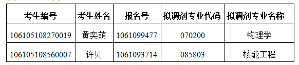

学院通知 · 考试安排
四川大学物理学院2025年普通招考博士研究生招生调剂复试通知
发布时间：2025-05-16
根据《四川大学研究生复试录取工作办法（2024年修订）》有关规定，经我院研究生招生工作领导小组研究，2025年我院博士研究生招生调剂复试安排如下： 一、调剂复试形式及时间 1.调剂复试形式为线下复试。 2.调剂复试时间为5月18日上午9:00（复试地点另行通知）。 特别提醒：复试考生可凭网上复试名单（截图）和本人身份证进入校门。 二、报到与资格审查 1.报到时间：5月18日上午8:15-8:45。 2.报到地点：物理学院研究生办公室（望江校区物理馆113室）。 3.调剂复试报到所需材料 （1）有效第二代居民身份证； （2）往届生需提供硕士毕业证和学位证书，或国（境）外学历学位认证证书（国/境外硕士学历获得者提供），同等学力生提供最高学位证书；应届生需提供完整注册的学生证； （3）手写签名的《四川大学2025年博士研究生诚信复试承诺书》（附件1）。 注：以上所有材料均需准备原件及复印件各1套。 三、复试内容 个人陈述（10分钟左右PPT）、外语能力考核、专业知识问答（随机抽题）、综合素质及能力测试。 四、成绩计算方法 调剂复试为差额复试。复试成绩总分为100分，复试成绩应不低于60分，否则视为复试不合格，不予录取。 加权公式：S总=材料评议成绩×50%+复试成绩×50% 材料评议成绩采用第一志愿材料评议成绩。 五、复试收费标准 根据《四川省发展和改革委员会 四川省财政厅关于全省教育系统考试考务行政事业性收费的通知》（川发改价格〔2022〕484号）规定：研究生招生复试费：每生120元。按照学校相关要求，研究生复试费需在网上缴纳。缴费网址：http://sf.scu.edu.cn/payment/，用户名为：TJ+本人身份证号，密码为：WL85415561，缴费时间：5月16日-5月17日。 六、体检 拟录取名单公示后，在二级甲等及以上医院体检（1寸照片贴体检表）。 加盖公章的体检表原件请于拟录取名单公示后7个工作日内寄送到我院或自行递交到我院。 地址：四川大学望江校区物理学院物理馆113办公室。 收件人：张老师；联系电话：028-85415561。 七、各专业复试名单 八、咨询联系方式 02885415561 张老师 九、举报受理渠道 学院成立“研究生复试工作举报受理小组”，接受考生的实名举报。举报受理小组在接到举报后，展开调查，在5个工作日以内回复举报人。 投诉举报电话：028-85418565；15902883088 投诉举报邮箱 ：wulijw@scu.edu.cn 投诉举报地址：四川大学望江校区物理学院纪委书记办公室 注：不能按时前来参加复试的考生视作自动放弃 四川大学物理学院研究生办公室 2025年5月16日 附件1：博士诚信复试承诺书.docx
